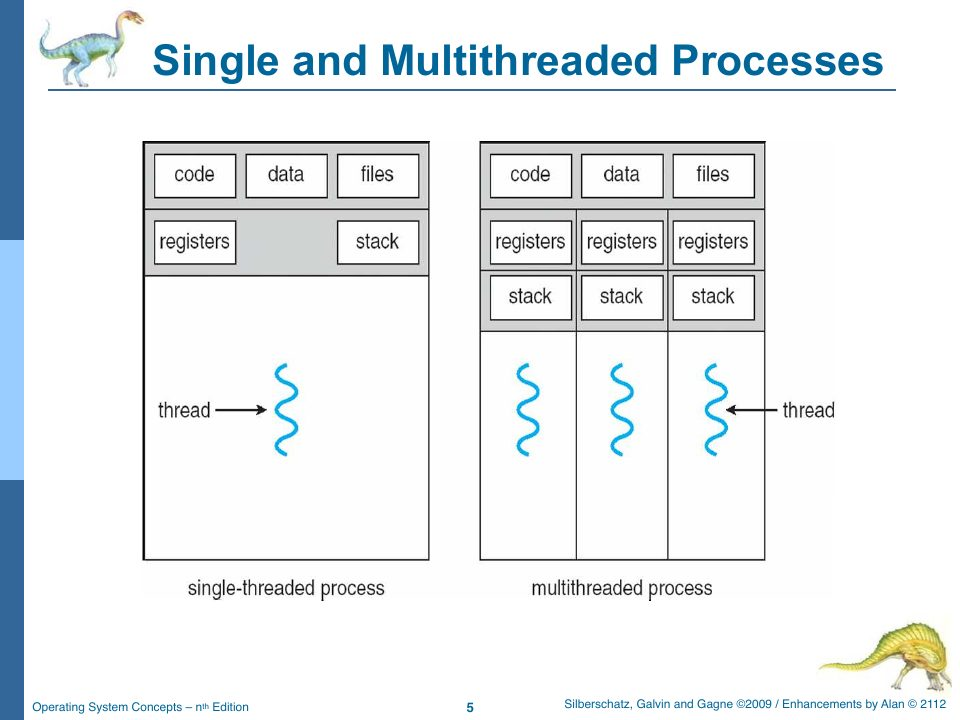
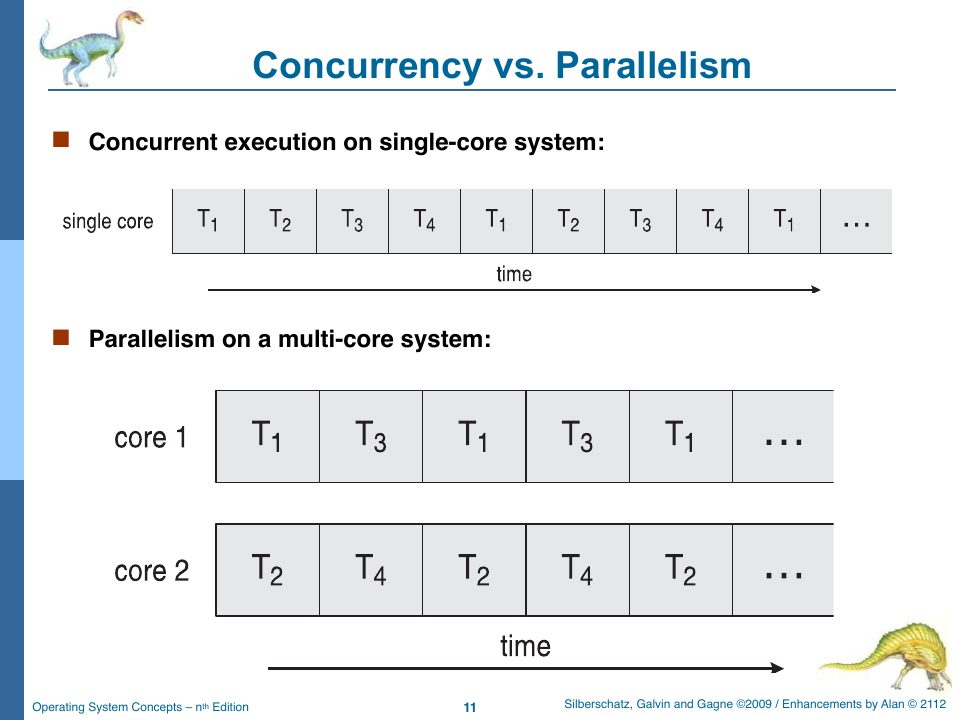

Threads, and the One Thread You Have
Slides: Chapter 4, “Threads,” pp. 222–267.
rObSen has no threads. This chapter is still worth reading, for two reasons: the concepts are on the exams, and the absence of threads, both in the OS rObSen implements and in the JavaScript it’s written in, explains a great deal about how rObSen behaves.
What a thread is
“So far, process has a single thread of execution. But a process is really a container for threads” (slide p. 180). A thread is an execution context within a process: its own program counter, registers, and stack. All the threads of a process share its code, data, and open files.

The Windows-internals slides (pp. 200–201) put it crisply: “threads run, processes don’t run.” The process is the unit of resource ownership (address space, handles, security token); the thread is the unit of scheduling. Why bother with more than one? Responsiveness (the UI thread keeps responding while another thread works), resource sharing (threads share memory for free, unlike processes, which need IPC), economy (creating a thread is much cheaper than creating a process), and scalability (threads can run on different cores at once).
In rObSen terms, a thread would be “the part of a PCB that the CPU loads”: pc, acc, xReg, yReg, zFlag. Everything else in the PCB (base, limit, segment, location) is process-wide. A multithreaded rObSen would split the PCB into a process control block holding the memory information and a list of thread control blocks holding register sets, and the scheduler’s ready queue would hold TCBs. A 6502a program would need some way to start a second thread (a new system call, say X = 03: “start a thread at address Y”), and then two threads would share their process’s 256 bytes. That’s precisely the situation in which the race conditions of Chapter 19 appear.
Concurrency versus parallelism

“Parallelism implies a system can perform more than one task simultaneously. Concurrency supports more than one task making progress” (slide p. 227). A single core can be concurrent by interleaving; only multiple cores can be parallel.
rObSen is concurrent and never parallel. runall interleaves three processes six instructions at a time, but at every instant exactly one instruction of one process is executing. That’s the left half of the slide. Alan’s comment in hostBtnStartOS_click points at the right half: “We could simulate multi-core systems by instantiating more than one instance of the CPU here.” You’d need one _CurrentProcess per CPU, a scheduler that fills idle CPUs, and a clock pulse that steps every CPU. Even then, it would be simulated parallelism, because of the next section.
The one thread you really have
JavaScript in a browser page runs on a single thread, the main thread. Everything in rObSen happens on it: the clock callback, the kernel, the CPU’s instruction cycle, the keyboard handler, the shell, the panels’ repainting, and GLaDOS’s timed keystrokes. They never run at the same time. Each callback runs to completion, and then the browser picks the next one. Chapter 10a explains the mechanism, the event loop.
That has consequences you can feel:
- The OS can’t be interrupted in the middle of anything. A keystroke that arrives while
krnTimerISRis halfway through a context switch is simply queued by the browser until the ISR returns. So rObSen never needs to disable interrupts around critical sections: the language already guarantees mutual exclusion between every pair of callbacks. That’s why Chapter 19 calls the kernel “one big critical section.” - An infinite loop in the OS freezes everything, including the clock. If a shell command looped forever,
setIntervalcould never callhostClockPulseagain, the CPU would stop, and the page would hang until the browser offered to kill it. (An infinite loop in a 6502a program is harmless, because each instruction is one short callback.) - The clock is a request, not a guarantee.
setInterval(…, 100)asks for a callback roughly every 100 ms. If a tick takes longer (the disk panel parsing its JSON, a longps), the next one is late. And browsers throttle timers in background tabs, typically to about once per second, so rObSen’s 10 Hz CPU slows to roughly 1 Hz when you switch tabs. Measured in cycles, nothing changes; measured in seconds, a lot does.
In the vocabulary of the slides, rObSen is a many-to-one system (p. 240): many simulated activities (the CPU, the kernel, the devices, GLaDOS) mapped onto one real thread. The slide’s example of many-to-one is “green threads,” lightweight threads scheduled by a library rather than the OS, and that’s an apt description of how the browser schedules rObSen’s callbacks.
Multithreading models and libraries
For the exams, the rest of the chapter in brief:
- User threads are managed by a library in user space; kernel threads are managed by the OS (p. 237–238).
- Many-to-one (many user threads on one kernel thread): cheap, but one blocking call blocks them all, and they can’t use multiple cores. One-to-one (Windows, Linux): each user thread is a kernel thread, so true parallelism, but creation costs more. Many-to-many: the OS creates “a sufficient number” of kernel threads for many user threads. The two-level model is many-to-many plus the option to bind a user thread to a kernel thread (pp. 239–247).
- Thread libraries: POSIX Pthreads, Win32 threads, Java threads (pp. 248–250).
- Implicit threading leaves thread creation to compilers and runtimes: thread pools, OpenMP (
#pragma omp parallel for), Grand Central Dispatch (pp. 251–253). - Threading issues: does
fork()copy all threads or only the caller?; asynchronous cancellation (kill the target now) versus deferred cancellation (the target checks periodically whether it should stop); thread-local storage (pp. 254–258). - Windows threads are described by ETHREAD, KTHREAD, and TEB structures; Linux calls them tasks and creates them with
clone(), which can share the parent’s address space (pp. 259–266).
Amdahl’s Law
If a fraction S of a program is serial and the rest is perfectly parallel, then on N cores the best possible speedup is
speedup ≤ 1 / (S + (1 − S) / N)
The slide’s example (p. 235): 75% parallel, 25% serial, on 2 cores: 1 / (0.25 + 0.75/2) = 1 / 0.625 = 1.6×. As N goes to infinity, the speedup approaches 1/S = 4×, no matter how many cores you add. “Serial portion of an application has disproportionate effect on performance gained by adding additional cores.”
4 cores: 1 / (0.1 + 0.9/4) = 1 / 0.325 ≈ 3.08×. 16 cores: 1 / (0.1 + 0.9/16) = 1 / 0.15625 = 6.4×. Ceiling: 1 / 0.1 = 10×. Quadrupling the cores from 4 to 16 only roughly doubles the speedup.
The slide also mentions Gustafson’s Law, the counterpoint: in practice, people use more cores to solve bigger problems in the same time, and the parallel part of a program tends to grow with the problem size while the serial part doesn’t. Amdahl fixes the problem and asks how fast; Gustafson fixes the time and asks how big.
Check yourself
- Why does rObSen never need to “disable interrupts” around its scheduler’s critical sections?
- Switch to another tab during a long
runalland come back a minute later. Has the turnaround time (in cycles) of the running processes changed compared with staying on the tab? Has the elapsed wall-clock time? - Which fields of rObSen’s PCB would move into a thread control block in a multithreaded design?
Answers
- Because JavaScript runs each callback to completion on a single thread. A keyboard event can’t be delivered until the current clock callback (and everything it calls) has returned.
- Cycles: no, because turnaround and wait are counted in CPU cycles, and cycles are counted per tick no matter how far apart the ticks are. Wall-clock: yes, much longer, because background tabs throttle
setInterval. pc,ir,acc,xReg,yReg,zFlag, and the per-thread scheduling fields (state,priority,quantumRemaining, the timing fields).pid,base,limit,segment,size,location, andswapKeystay with the process.